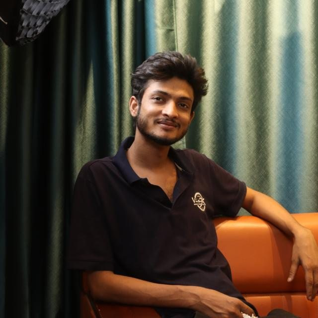

Available for new projects
Videos that keep people watching.
I'm Tarek — a freelance video editor from Bangladesh, helping creators and brands grow with edits people love to watch.
Now editing promo videos
Tarek Hasan Arfi
Video Editor · Bangladesh
1000+
Videos edited
About me

Hi, I'm Tarek. I've edited 1000+ videos for clients worldwide — turning raw footage into stories people actually finish watching. Promo, social & corporate edits that grow brands.
[ VIDEOS ]
0+
edited for brands & creators
[ CLIENTS ]
0+
happy clients worldwide
[ EXPERIENCE ]
0+
years in the edit bay
[ DELIVERY ]
0h
turnaround on short-form
Services
High-energy ads & product promos — music sync, fast cuts, clear call-to-action.
→ (02)Instagram, TikTok & Shorts — scroll-stopping hooks with animated captions.
→ (03)Brand films, testimonials & explainers — clean, polished and on-brand.
→ (04)YouTube & podcasts — jump cuts, punch-in zooms, B-roll & clean audio.
→Portfolio
Now showing.
01 / 06
Tip: tap the ⛶ icon in the player for fullscreen.
Open in Google DriveProcess
From raw footage to final export.
STEP 01
Brief
You share your footage, goals and reference videos. We lock in the vision, style and deadline.
Why me
More than just cutting clips.
I think about what makes viewers stay — and edit every second around it.
Start a project →Hook-first mindset
The first 3 seconds are planned to stop the scroll — because that's where views are won or lost.
Fast turnaround
Short videos delivered quickly, without cutting corners on quality.
Clear communication
Quick replies and progress updates at every step — you're never left guessing.
Revisions included
Your feedback is part of the process, not an extra charge.
FAQ
Questions? Answers.
Upload your clips to Google Drive, Dropbox or WeTransfer and send me the link with any notes or reference videos.
Short-form reels are usually ready within 24–48 hours. For longer videos I'll give you a clear timeline before starting.
Of course! You'll get a draft to review, and I'll refine it based on your feedback until it feels right.
Any size you need — 9:16 for Reels/TikTok/Shorts, 1:1 for feeds and 16:9 for YouTube — in high-quality MP4.
Production: Your next video
Editor: Tarek H. Arfi
Scene 01 · Take 01
Got a project?
Let's make your next video unforgettable.
Tell me about your project — I usually reply within a few hours.